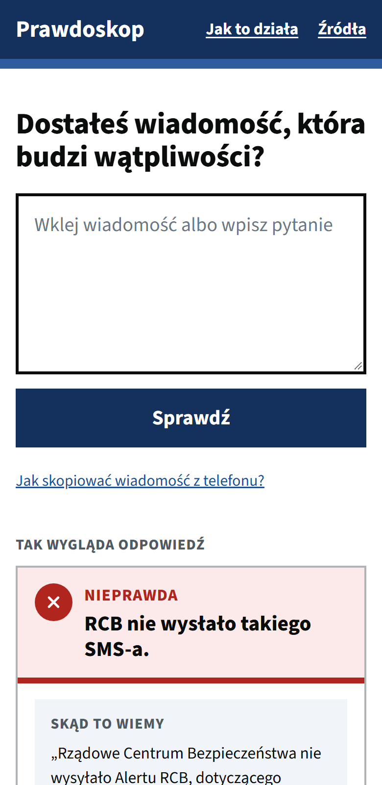
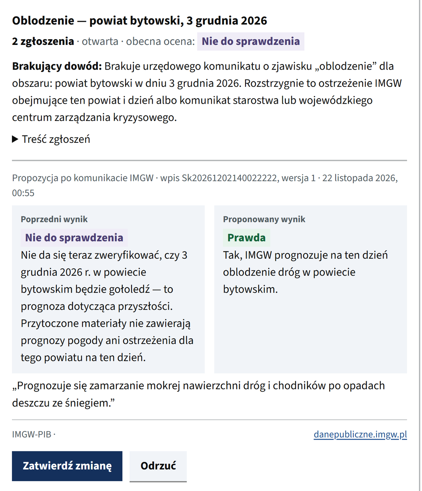

HackNation 2026 · zadanie MSZ
Prawdoskop
Sprawdź wiadomość, zanim ją przekażesz. Każda odpowiedź ma cytat ze źródła urzędowego albo uczciwe „brak potwierdzenia” z opisem brakującego dowodu.
Działa: WWW i WhatsApp, 513 źródeł, import IMGW na żywo

prawdowid-hacknation.fly.dev · github.com/KonradKrol/prawdowid-hacknation
Problem
Fałszywka wygląda jak komunikat urzędu
27.11.2018 · RCB
SMS wzywający mężczyzn do urzędów gmin. RCB: „nie wysyłało Alertu RCB” tej treści.
16.09.2024 · RCB
SMS-y podszywające się pod Alert RCB. Prawdziwy alert nie zawiera linków ani prośby o kliknięcie.
2.07.2026 · Urząd Miejski Wrocławia
Fałszywi „kurierzy z urzędu” dzwonią i sprawdzają, kiedy ktoś będzie w domu.
Obywatel potrzebuje w minutę trzech odpowiedzi: czy to prawda, skąd to wiadomo i czego jeszcze nie wiadomo. Dziś szuka komunikatu sam, osobno na stronach RCB, sanepidu, gminy i IMGW.
Przypadki z korpusu Prawdoskopu (gov.pl, wroclaw.pl). Wnioski z rozmów z mentorami MSZ: pierwszeństwo właściwego źródła urzędowego i ostrożność ocen.
Dla obywatela
Prosty jak aplikacja publiczna: wklej, przeczytaj, sprawdź
1
Wkleja wiadomość z SMS-a, Messengera albo WhatsAppa. Bez konta i bez instalacji.
2
Dostaje werdykt prostymi słowami: Prawda, Nieprawda, Wprowadza w błąd, Brak potwierdzenia.
3
Widzi dosłowny cytat, wydawcę, datę i link. Każdą ocenę sprawdzi sam.
Ten sam silnik w WWW i WhatsApp
Większy tekst i kontrast
Czytanie na głos

Ekran z wdrożonej aplikacji, 22.11.2026: pytanie o oblodzenie w powiecie bytowskim, odpowiedź z aktualnego ostrzeżenia IMGW.
Jak to działa
Model tłumaczy na prosty język. Kod pilnuje faktów.
Wiadomość
SMS, post albo pytanie. Gdy brakuje miejsca lub tematu, jedno pytanie: „Gdzie?”, „Którą informację sprawdzić?”.
Zatwierdzone źródła
513 dokumentów z 16 serwisów: 56% rządowe, 28% fact-checki, 15% samorządy. Plus ostrzeżenia IMGW na żywo.
Model opisuje
Wybiera jedną z pięciu ocen i pisze 1–2 zdania odpowiedzi na pytanie użytkownika.
Kod sprawdza
Cytat musi być w źródle słowo w słowo. Liczba lub data bez pokrycia w cytacie znika. Tytuł, wydawca i data pochodzą z bazy.
Brak dowodu to „Brak potwierdzenia” z opisem, czego brakuje. Nigdy zgadywanie.
To samo sprawdzenie obsługuje WWW i WhatsApp. Ta sama treść przy tym samym zbiorze źródeł daje ten sam wynik (pamięć wyników).
Jakość dowodów i bezpieczeństwo
Werdykt tylko wtedy, gdy cytat istnieje w źródle
13/14
poprawnych odpowiedzi na pytania o nowe tematy po dodaniu 400 źródeł (wcześniej 1/14)
8/12
na starych pytaniach testowych, bez pogorszenia po rozbudowie
0/8
fałszywych werdyktów przy pytaniach bez dowodu: system wstrzymuje ocenę
Kod sprawdza model
Cytat musi występować dosłownie w jednym fragmencie źródła. Liczba albo data bez pokrycia w cytacie jest usuwana z uzasadnienia. Instrukcje ukryte w wiadomości są ignorowane.
Ręczny przegląd cytatów
Wszystkie cytaty w odpowiedziach v5 odpowiadają na zadane pytanie. Przy braku źródła odpowiedź mówi, jakiego komunikatu brakuje.
Próba 22.11.2026: 32 pytania (14 o tematy dodanych źródeł, 12 z próby startowej, 6 bez dowodu), model gpt-6-luna, wyszukiwanie BM25, bez pamięci podręcznej. Pytania o nowe tematy przygotowano razem z rozbudową korpusu.
Moduł kryzysowy
Jedno zdarzenie, jedna sprawa, aktualny komunikat
Zgłoszenia
Dwie różnie sformułowane wiadomości o gołoledzi w powiecie bytowskim, z WWW i z WhatsAppa.
Jedna sprawa
Zjawisko + powiat (TERYT) + dzień. Licznik zgłoszeń i opis brakującego dowodu. Inny powiat albo dzień to osobna sprawa.
Import IMGW
Co 10 minut. Zapis daty publikacji, czasu pobrania i wersji wpisu. Ponowny import tego samego wpisu nic nie dubluje.
Ponowna ocena
Tylko sprawy, których dotyczy komunikat. Ten sam mechanizm weryfikacji, wynik trafia do moderatora.
| Kanał | Format i dostęp | Daty i korekty | Decyzja |
|---|---|---|---|
| IMGW | JSON, bez klucza, kody TERYT powiatów | publikacja, ważność od–do; korekta = nowa wersja | prototyp |
| RSO | JSON i XML, bez klucza, województwa | ważność, created_at i updated_at | następny |
| RCB | strona HTML gov.pl, brak API | data na liście komunikatów | parser HTML |
22.11.2026: import IMGW na produkcji 932 ms; lokalnie 23 pobrania co 2 min, 0 błędów, mediana importu 132 ms.
Dla moderatora i administratora
Zmianę oceny zatwierdza człowiek
Po nowym komunikacie moderator widzi poprzedni i proponowany wynik oraz cytat, który uzasadnia zmianę.
1
Sprawy z licznikiem zgłoszeń i opisem brakującego dowodu
2
Korekta komunikatu IMGW daje nową wersję i nową propozycję
3
Nieudana synchronizacja: czerwony komunikat w panelu i w /health
4
Symulacja ostrzeżenia do ćwiczeń: ten sam przebieg, oznaczony [SYMULACJA]

Panel z odtwarzalnego demo (scripts/demo_moderacja.py --live, model gpt-6-luna). Dostęp do panelu chroniony tokenem administratora.
Powracające narracje · EUvsDisinfo
Stara narracja w nowym opakowaniu: od razu widać
„Polska chce zająć zachodnią Ukrainę”: EUvsDisinfo opisało ten przekaz co najmniej 5 razy w latach 2022–2024.
1
Mała etykieta pod werdyktem: nazwa narracji i link do opisu EUvsDisinfo
2
Werdykt tylko z dowodów o tej sprawie. Podobieństwo nie jest dowodem.
3
932 narracje o Polsce z bazy EUvsDisinfo, przetłumaczone na polski. Zwykłe wiadomości: 0 fałszywych etykiet na 74

Ekran z wdrożonej aplikacji, 22.11.2026. Przypadek EUvsDisinfo z 4.10.2024. Import przez MCP EUvsDisinfo: 19 873 przypadki, 1621 o Polsce, 932 po kontroli jakości; tłumaczenie 0,17 USD. Rozpoznanie 6 z 10 ręcznie napisanych powtórzeń.
Skala, RAG i koszt
0,46 USD za 1000 sprawdzeń, a maszyna śpi, gdy nikt nie pyta
| Wyszukiwanie (korpus v5) | Trafienie nr 1 | Komplet w top 4 | Czas wyszuk. | Werdykty | Mediana | Koszt / 1000 |
|---|---|---|---|---|---|---|
| BM25 (domyślnie) | 21/25 | 24/25 | 3,3 ms | 25/29 | 3,4 s | 0,464 USD |
| E5 semantyczne | 23/25 | 24/25 | 20,0 ms | — | — | — |
| Hybryda BM25 + E5 | 22/25 | 24/25 | 21,6 ms | 23/29 | 3,4 s | 0,461 USD |
Infrastruktura dziś
Fly.io: 1 współdzielony CPU, 256 MB, automatyczne zatrzymanie bez ruchu, SQLite na trwałym wolumenie. Limit 400 płatnych sprawdzeń w demo.
Droga do skali
Hybryda RAG do włączenia przy większym korpusie i parafrazach. Kolejne kanały (RSO, RCB) przez ten sam importer. Model i dostawca wymienni.
Warunki: 32 pytania, gpt-6-luna, bez pamięci podręcznej, 22.11.2026. E5 = multilingual-e5-small ONNX int8, lokalny CPU, indeks 513 dok. w 92 s. Hybryda = RRF k=60. Koszt z liczników tokenów API.
Wdrożenie
Gotowe do pilotażu w jednym województwie
Działa dziś
Strona WWW i WhatsApp. 513 źródeł. Ostrzeżenia IMGW na żywo. Panel moderatora z symulacją ostrzeżeń. 932 znane narracje EUvsDisinfo po polsku.
Kolejne 3 miesiące
RSO i RCB przez ten sam importer. Codzienna aktualizacja narracji EUvsDisinfo. Wersje EN i UK dla cudzoziemców i uchodźców.
Czego potrzebujemy
Dostępu do kanałów urzędowych (RCB, RSO). Partnera fact-checkingowego. Jednego województwa i jego centrum zarządzania kryzysowego na pilotaż.
Koszt pilotażu: ułamek centa za sprawdzenie. Obywatel nie zakłada konta i nie instaluje aplikacji.
prawdowid-hacknation.fly.dev · github.com/KonradKrol/prawdowid-hacknation